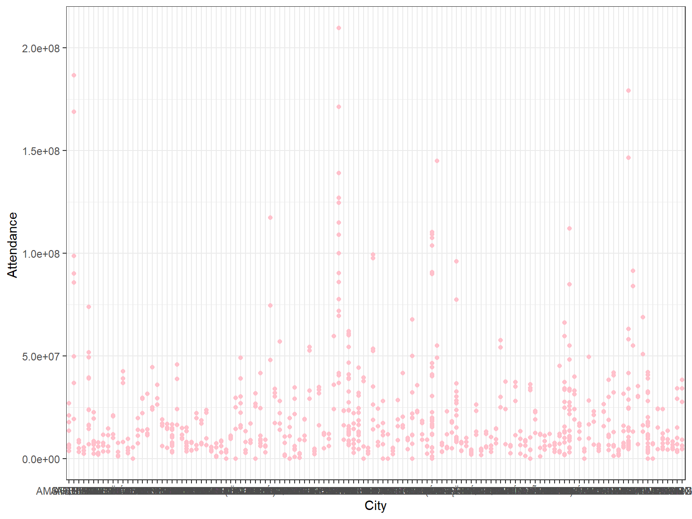
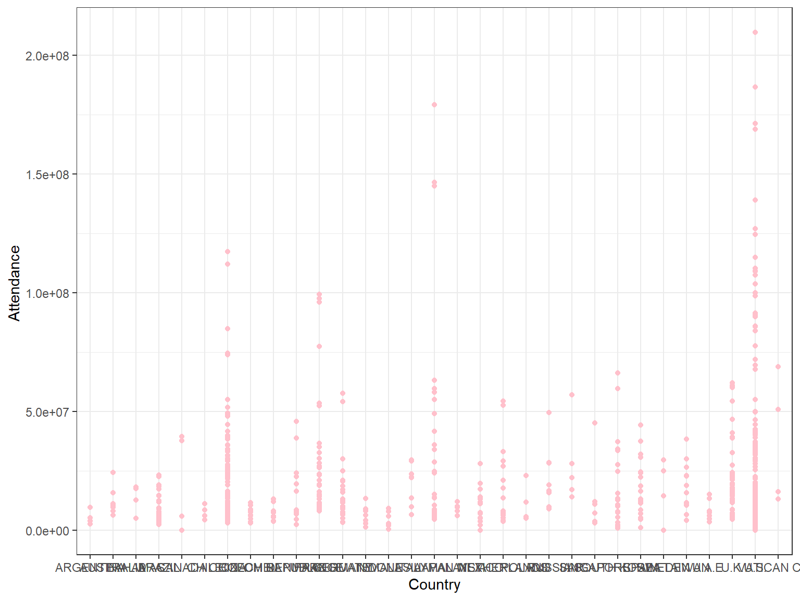
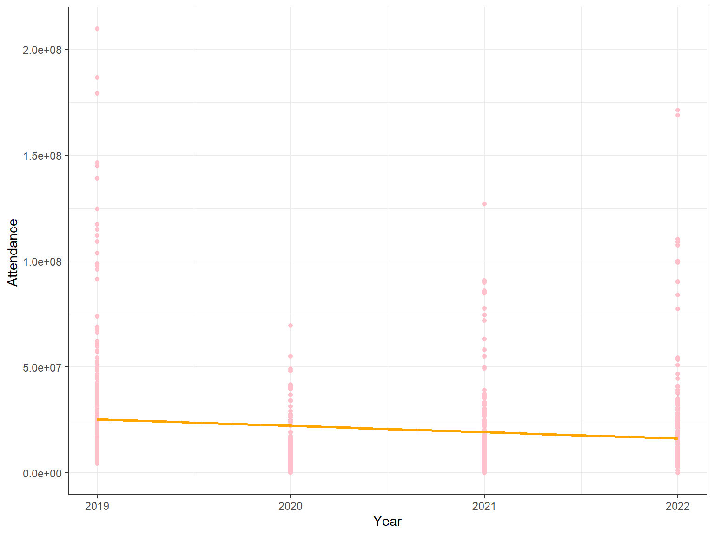
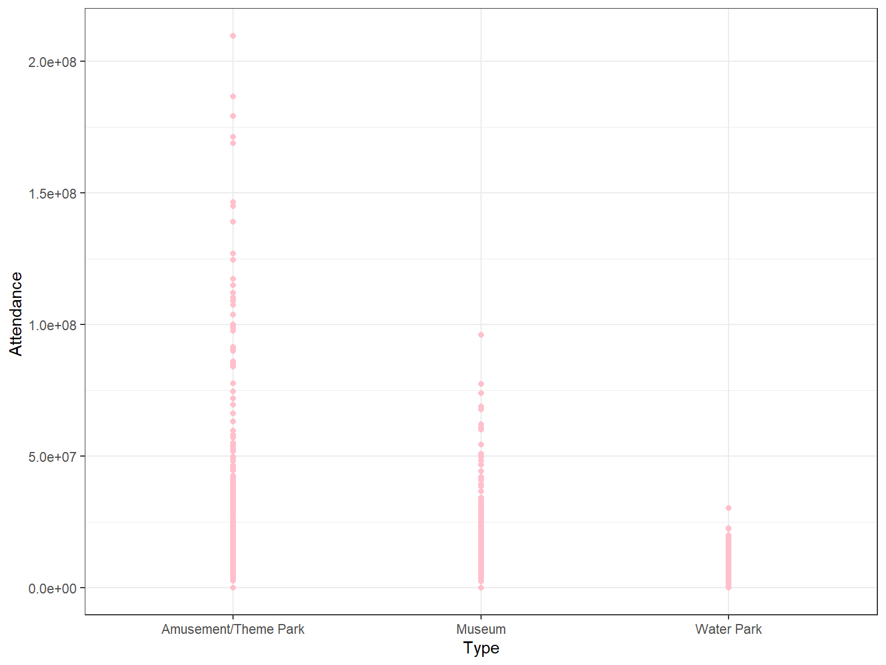
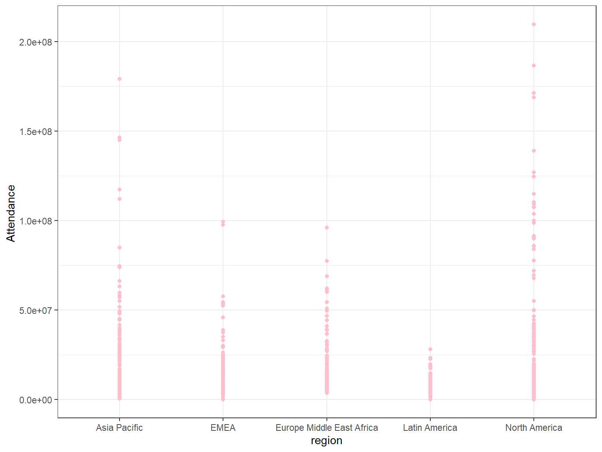
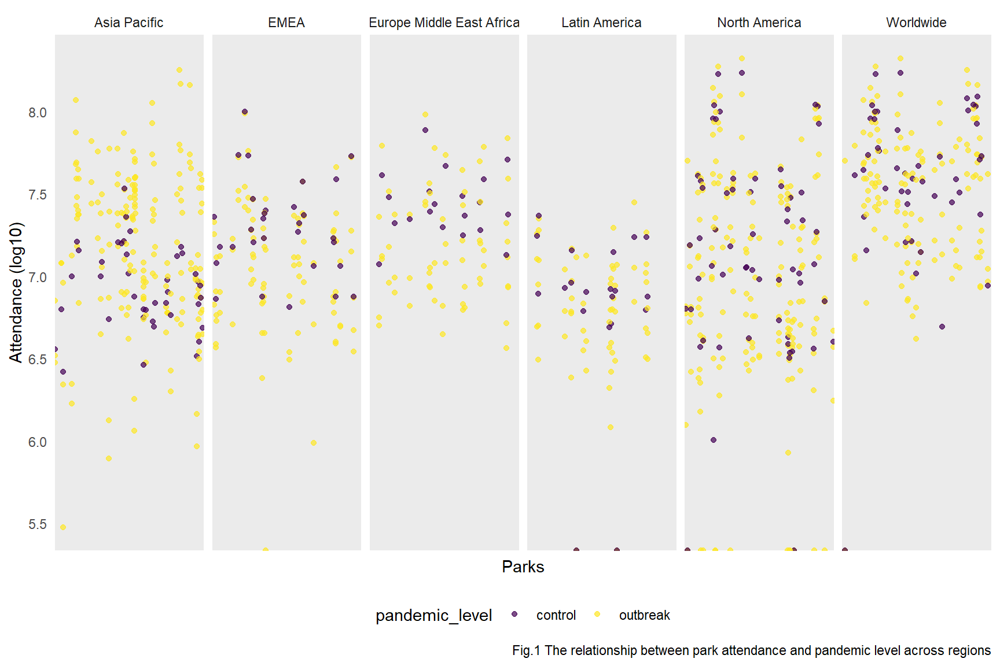
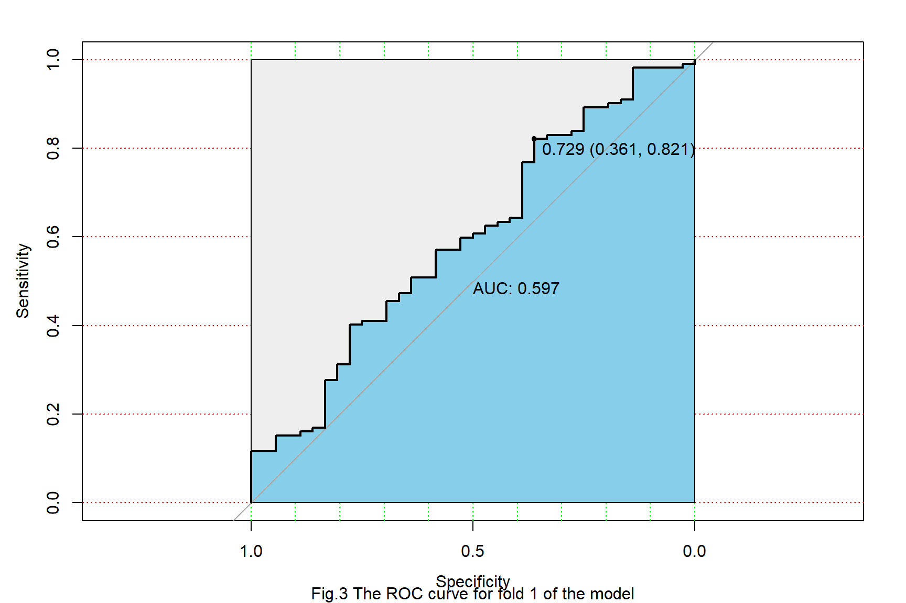

As theme parks and museums are significant contributors to the tourism and entertainment industry. Then understanding how attendance has been affected is vital and may provides insights into the economic impact of the pandemic on these sectors.
In addition, analyzing attendance data of parks and museums from different region can provide insights into how the impact of the pandemic on theme parks and museums in the United States compares to other countries. This comparative analysis helps in understanding the global dynamics of the tourism and entertainment industries, which also provides insights into understanding how different regions responded to COVID-19.
The main question we are trying to understand is what is the overall Impact of the COVID-19 Pandemic on Theme Park Attendance. While collecting the data, we also involved attendance data of different theme parks, water parks and museums around the world. After adding variables such as park types and regions, we also tried to investigate the relationship between the park attendance and other covariants.
We sourced our data from the “Global Attractions Attendance Report”, a publication by AECOM and TEA. The dataset comprises attendance information for various theme parks and museums worldwide, covering the years 2019 to 2022. You can access the detailed report through this link.
Each individual dataset catgegorized by types of parks and regions of
the parks are listed in the article. By collecting each of the dataset,
we created separate dataframes and combine to one ultimate dataset with
all of the data focusing on Park_Name, City,
Country, Year, Attendance,
Type, and Region.
Park_Name: Names of the parkCity: City of where the park is locatedCountry: Country of where the park is locatedYear: Year of attendanceAttendance: Number of people visited the parkType: Amusement/Theme Parks, Water Parks, and
MuseumsRegion: Worldwide, North America, Latin America, Asia
Pacific, Europe Middle East Africadata_text_tp_ww = "1, MAGIC KINGDOM THEME PARK AT WALT DISNEY WORLD RESORT, LAKE BUENA VISTA, U.S., 35%, 17133, 12691, 6941, 20963
2, DISNEYLAND PARK AT DISNEYLAND RESORT, ANAHEIM, U.S., 97%, 16881, 8573, 3674, 18666
3, TOKYO DISNEYLAND AT TOKYO DISNEY RESORT, TOKYO, JAPAN, 90%, 12000, 6300, 4160, 17910
4, TOKYO DISNEYSEA AT TOKYO DISNEY RESORT, TOKYO, JAPAN, 74%, 10100, 5800, 3400, 14650
5, UNIVERSAL STUDIOS JAPAN, OSAKA, JAPAN, 125%, 12350, 5500, 4901, 14500
6, DISNEY'S ANIMAL KINGDOM AT WALT DISNEY WORLD, LAKE BUENA VISTA, U.S., 25%, 9027, 7194, 4166, 13888
7, EPCOT AT WALT DISNEY WORLD, LAKE BUENA VISTA, U.S., 29%, 10000, 7752, 4044, 12444
8, CHIMELONG OCEAN KINGDOM, HENGQIN, CHINA, -41%, 4400, 7452, 4797, 11736
9, DISNEY'S HOLLYWOOD STUDIOS AT WALT DISNEY WORLD, LAKE BUENA VISTA, U.S., 27%, 10900, 8589, 3675, 11483
10, SHANGHAI DISNEYLAND AT SHANGHAI DISNEY RESORT, SHANGHAI, CHINA, -38%, 5300, 8480, 5500, 11210
11, UNIVERSAL STUDIOS FLORIDA AT UNIVERSAL ORLANDO, FL, U.S., 20%, 10750, 8987, 4096, 10922
12, UNIVERSAL'S ISLANDS OF ADVENTURE AT UNIVERSAL ORLANDO, ORLANDO, U.S., 21%, 11025, 9077, 4005, 10375
13, DISNEYCALIFORNIA ADVENTURE PARK AT DISNEYLAND RESORT, ANAHEIM, U.S., 81%, 9000, 4977, 1919, 9861
14, DISNEYLAND PARK AT DISNEYLAND PARIS, MARNE-LA-VALLEE, FRANCE, 184%, 9930, 3500, 2620, 9745
15, UNIVERSAL STUDIOS HOLLYWOOD, UNIVERSAL CITY, U.S., 53%, 8400, 5505, 1299, 9147
16, EVERLAND, GYEONGGI-DO, SOUTH KOREA, 56%, 5770, 3710, 2760, 6606
17, LOTTE WORLD, SEOUL, SOUTH KOREA, 84%, 4520, 2460, 1560, 5953
18, NAGASHIMA SPA LAND, KUWANA, JAPAN, 17%, 4200, 3600, 2400, 5950
19, EUROPA-PARK, RUST, GERMANY, 100%, 6000, 3000, 2500, 5750
20, OCEAN PARK, HONG KONG, SAR, 0%, 1400, 1400, 2200, 5700
21, HONG KONG DISNEYLAND, HONG KONG, SAR, 21%, 3400, 2800, 1700, 5695
22, DE EFTELING EFTELING THEME PARK RESORT, KAATSHEUVEL, NETHERLANDS, 65%, 5430, 3300, 2900, 5260
23, WALT DISNEY STUDIOS PARK AT DISNEYLAND PARIS, MARNE-LA-VALLEE, FRANCE, 183%, 5340, 1884, 1410, 5245
24, OCT HAPPY VALLEY, BEIJING, CHINA, -24%, 3740, 4930, 3950, 5160
25, CHIMELONG PARADISE, GUANGZHOU, CHINA, -41%, 2300, 3890, 2681, 4905"
top25_tp_ww = read.table(text = data_text_tp_ww, sep = ",", header = FALSE, quote = "", na.strings = "-")
colnames(top25_tp_ww) = c("id","Park_Name", "City", "Country", "%Change", "2022", "2021", "2020", "2019")top25_tp_ww_clean_df =
top25_tp_ww |>
pivot_longer(
("2019"):("2022"),
names_to = "Year",
values_to = "Attendance"
) |>
mutate(
Type = "Amusement/Theme Park",
Region = "Worldwide",
Attendance = Attendance * 10e3
) |>
select(
Park_Name, City, Country, Year, Attendance, Type, Region
)data_text_tp_na = "1, MAGIC KINGDOM THEME PARK AT WALT DISNEY WORLD, LAKE BUENA VISTA, FL, U.S., 35%, 17133, 12691, 6941, 20963
2, DISNEYLAND PARK AT DISNEYLAND RESORT, ANAHEIM, CA, U.S., 97%, 16881, 8573, 3674, 18666
3, DISNEY'S ANIMAL KINGDOM AT WALT DISNEY WORLD, LAKE BUENA VISTA, FL, U.S., 25%, 9027, 7194, 4166, 13888
4, EPCOT AT WALT DISNEY WORLD, LAKE BUENA VISTA, FL, U.S., 29%, 10000, 7752, 4044, 12444
5, DISNEY'S HOLLYWOOD STUDIOS AT WALT DISNEY WORLD, LAKE BUENA VISTA, FL, U.S., 27%, 10900, 8589, 3675, 11483
6, UNIVERSAL STUDIOS FLORIDA, ORLANDO, FL, U.S., 20%, 10750, 8987, 4096, 10922
7, UNIVERSAL'S ISLANDS OF ADVENTURE, ORLANDO, FL, U.S., 21%, 11025, 9077, 4005, 10375
8, DISNEY CALIFORNIA ADVENTURE PARK AT DISNEYLAND RESORT, ANAHEIM, CA, U.S., 81%, 9000, 4977, 1919, 9861
9, UNIVERSAL STUDIOS HOLLYWOOD, UNIVERSAL CITY, CA, U.S., 53%, 8400, 5505, 1299, 9147
10, SEAWORLD ORLANDO, ORLANDO, FL, U.S., 46%, 4454, 3051, 1598, 4640
11, KNOTT'S BERRY FARM, BUENA PARK, CA, U.S., 6%, 3899, 3681, 811, 4238
12, BUSCH GARDENS TAMPA BAY, TAMPA, FL, U.S., 26%, 4051, 3210, 1288, 4180
13, CANADA'S WONDERLAND, MAPLE, ONTARIO, CANADA, 524%, 3768, 587, 0, 3950
14, SEAWORLD SAN DIEGO, SAN DIEGO, CA, U.S., 25%, 3507, 2800, 1139, 3731
15, CEDAR POINT, SANDUSKY, OH, U.S., 4%, 3444, 3327, 1020, 3610
16, SIX FLAGS MAGIC MOUNTAIN, VALENCIA, CA, U.S., -2%, 2993, 3047, 686, 3521
17, KINGS ISLAND, KINGS ISLAND, OH, U.S., 5%, 3340, 3181, 1626, 3485
18, SIX FLAGS GREAT ADVENTURE, JACKSON, NJ, U.S., -26%, 2153, 2913, 598, 3451
19, HERSHEYPARK, HERSHEY, PA, U.S., 6%, 3193, 3012, 1717, 3384
20, SIX FLAGS GREAT AMERICA, GURNEE, IL, U.S., -5%, 2535, 2675, 0, 3169"
top20_tp_na = read.table(text = data_text_tp_na, sep = ",", header = FALSE, quote = "")
colnames(top20_tp_na) = c("id","Park_Name", "City", "State", "Country", "%Change", "2022", "2021", "2020", "2019")top20_tp_na_clean_df =
top20_tp_na |>
pivot_longer(
("2019"):("2022"),
names_to = "Year",
values_to = "Attendance"
) |>
mutate(
Type = "Amusement/Theme Park",
Region = "North America",
Attendance = Attendance * 10e3
) |>
select(
Park_Name, City, Country, Year, Attendance, Type, Region
)data_text_tp_la = "1,SIX FLAGS MEXICO, MEXICO CITY, MEXICO, 54%, 1727, 1125, 701, 2803
2,BETO CARRERO WORLD, SANTA CATARINA, BRAZIL, 23%, 2327, 1895, 1252, 2241
3,PARQUE XCARET, CANCUN, MEXICO, 27%, 1399, 1104, 736, 1960
4,MUNDO PETAPA, GUATEMALA CITY, GUATEMALA, 99%, 800, 402, 268, 1330
5,LA FERIA DE CHAPULTEPEC, MEXICO CITY, MEXICO, 0%, 0, 0, 0, 1306
6,PLAZA DE SESAMO, MONTERREY, MEXICO, 0%, 0, 0, 0, 1173
7,PARQUE MUNDO AVENTURA, BOGOTÁ, COLOMBIA, 19%, 752, 631, 344, 1151
8,FANTASIALANDIA, SANTIAGO, CHILE, 38%, 850, 615, 430, 1100
9,THEME PARQUE NACIONAL DEL CAFÉ, QUINDIO, COLOMBIA, 30%, 626, 482, 321, 1043
10,PARQUE DE LA COSTA, BUENOS AIRES, ARGENTINA, 30%, 514, 395, 263, 968"
top10_tp_la = read.table(text = data_text_tp_la, sep = ",", header = FALSE, quote = "")
colnames(top10_tp_la) = c("id","Park_Name", "City", "Country", "%Change", "2022", "2021", "2020", "2019")top10_tp_la_clean_df =
top10_tp_la |>
pivot_longer(
("2019"):("2022"),
names_to = "Year",
values_to = "Attendance"
) |>
mutate(
Type = "Amusement/Theme Park",
Region = "Latin America",
Attendance = Attendance * 10e3
) |>
select(
Park_Name, City, Country, Year, Attendance, Type, Region
)data_text_tp_apac = "1, TOKYO DISNEYLAND AT TOKYO DISNEY RESORT, TOKYO, JAPAN, 90%, 12000, 6300, 4160, 17910
2, TOKYO DISNEYSEA AT TOKYO DISNEY RESORT, TOKYO, JAPAN, 74%, 10100, 5800, 3400, 14650
3, UNIVERSAL STUDIOS JAPAN, OSAKA, JAPAN, 125%, 12350, 5500, 4901, 14500
4, CHIMELONG OCEAN KINGDOM, HENGQIN, CHINA, -41%, 4400, 7452, 4797, 11736
5, SHANGHAI DISNEYLAND AT SHANGHAI DISNEY RESORT, SHANGHAI, CHINA, -38%, 5300, 8480, 5500, 11210
6, EVERLAND, SEOUL, SOUTH KOREA, 56%, 5770, 3710, 2760, 6606
7, LOTTE WORLD, SEOUL, SOUTH KOREA, 84%, 4520, 2460, 1560, 5953
8, NAGASHIMA SPA LAND, KUWANA, JAPAN, 17%, 4200, 3600, 2400, 5950
9, OCEAN PARK, HONG KONG, SAR, 0%, 1400, 1400, 2200, 5700
10, HONG KONG DISNEYLAND, HONG KONG, SAR, 21%, 3400, 2800, 1700, 5695
11, OCT HAPPY VALLEY, BEIJING, CHINA, -24%, 3740, 4930, 3950, 5160
12, CHIMELONG PARADISE, GUANGZHOU, CHINA, -41%, 2300, 3890, 2681, 4905
13, UNIVERSAL STUDIOS SINGAPORE, Sentosa, SINGAPORE, 75%, 2100, 1200, 1098, 4500
14, CHINA DINOSAUR PARK, CHANGZHOU, CHINA, -12%, 2200, 2500, 2375, 4434
15, OCT WINDOW OF THE WORLD, SHENZHEN, CHINA, -54%, 1100, 2400, 1890, 3990
16, OCT HAPPY VALLEY, SHENZHEN, CHINA, -47%, 1750, 3310, 3120, 3980
17, ZHENGZHOU FANTAWILD ADVENTURE, ZHENGZHOU, CHINA, -42%, 1590, 2752, 3421, 3840
18, OCT HAPPY VALLEY, CHENGDU, CHINA, -47%, 1570, 2940, 2620, 3580
19, NINGBO FANTAWILD ORIENTAL HERITAGE, NINGBO, CHINA, -47%, 1230, 2308, 2257, 3575
20, OCT HAPPY VALLEY, SHANGHAI, CHINA, -62%, 1240, 3300, 2730, 3390"
top20_tp_apac = read.table(text = data_text_tp_apac, sep = ",", header = FALSE, quote = "", na.strings = "-")
colnames(top20_tp_apac) = c("id","Park_Name", "City", "Country", "%Change", "2022", "2021", "2020", "2019")top20_tp_apac_clean_df =
top20_tp_apac |>
pivot_longer(
("2019"):("2021"),
names_to = "Year",
values_to = "Attendance"
) |>
mutate(
Type = "Amusement/Theme Park",
Region = "Asia Pacific",
Attendance = Attendance * 10e3
) |>
select(
Park_Name, City, Country, Year, Attendance, Type, Region
)data_text_tp_emea = "1,DISNEYLAND PARK AT DISNEYLAND PARIS, MARNE-LA-VALLEE, FRANCE,184%,9930,3500,2620,9745
2,EUROPA-PARK, RUST, GERMANY,80%,5400,3000,2500,5750
3,DE EFTELING THEME PARK RESORT, KAATSHEUVEL, NETHERLANDS,65%,5430,3300,2900,5260
4,WALT DISNEY STUDIOS PARK AT DISNEYLAND PARIS, MARNE-LA-VALLEE, FRANCE,183%,5340,1884,1410,5245
5,TIVOLI GARDENS, COPENHAGEN, DENMARK,61%,3864,2400,1628,4581
6,PORTAVENTURA WORLD, SALOU, SPAIN,56%,3750,2400,700,3750
7,LISEBERG, GOTHENBURG, SWEDEN,73%,2500,1447,0,2950
8,GARDALAND, CASTELNUOVO DEL GARDA, ITALY,34%,2950,2200,1350,2920
9,LEGOLAND WINDSOR, WINDSOR, U.K.,60%,2400,1500,450,2430
10,PARC ASTERIX, PLAILLY, FRANCE,102%,2632,1300,1163,2326
11,PUY DU FOU, LES EPESSES, FRANCE,45%,2342,1616,923,2308
12,PARQUE WARNER, MADRID, SPAIN,43%,1860,1300,450,2232
13,ALTON TOWERS, STAFFORDSHIRE, U.K.,28%,2300,1800,670,2130
14,PHANTASIALAND, BRÜHL, GERMANY,78%,2100,1180,1000,2050
15,LEGOLAND BILLUND, BILLUND, DENMARK,164%,2242,850,700,1950
16,THORPE PARK, CHERTSEY, U.K.,-6%,1600,1700,600,1900
17,FUTUROSCOPE, JAUNAY-CLAN, FRANCE,75%,1920,1100,900,1900
18,LEGOLAND DEUTSCHLAND, GÜNZBURG, GERMANY,89%,1700,900,750,1700
19,HEIDE PARK, SOLTAU, GERMANY,23%,1600,1300,950,1700
20,CHESSINGTON WORLD OF ADVENTURES, CHESSINGTON, U.K.,3%,1500,1450,510,1690"
top20_tp_emea = read.table(text = data_text_tp_emea, sep = ",", header = FALSE, quote = "", na.strings = "-")
colnames(top20_tp_emea) = c("id","Park_Name", "City", "Country", "%Change", "2022", "2021", "2020", "2019")top20_tp_emea_clean_df =
top20_tp_emea |>
pivot_longer(
("2019"):("2022"),
names_to = "Year",
values_to = "Attendance"
) |>
mutate(
Type = "Amusement/Theme Park",
Region = "EMEA",
Country_State = Country,
Attendance = Attendance * 10e3
) |>
select(
Park_Name, City, Country, Year, Attendance, Type, Region
)data_text_wp_na = "1,DISNEY'S TYPHOON LAGOON WATER PARK AT WALT DISNEY WORLD RESORT, ORLANDO, FL, U.S., 0%, 1915, 0, 0, 2248
2,DISNEY'S BLIZZARD BEACH WATER PARK AT WALT DISNEY WORLD RESORT, ORLANDO, FL, U.S., -92%, 101, 1201, 316, 1983
3,UNIVERSAL'S VOLCANO BAY, ORLANDO, FL, U.S., 9%, 1850, 1691, 551, 1811
4,AQUATICA, ORLANDO, FL, U.S., 35%, 1548, 1147, 528, 1533
5,SCHLITTERBAHN, NEW BRAUNFELS, TX, U.S., 7%, 946, 888, 451, 996
6,WATER COUNTRY USA, WILLIAMSBURG, VA, U.S., 1%, 707, 700, 0, 736
7,ADVENTURE ISLAND, TAMPA, FL, U.S., 7%, 636, 593, 125, 656
8,AQUATICA SAN ANTONIO, SAN ANTONIO, TX, U.S., 8%, 631, 586, 263, 651
9,SCHLITTERBAHN, GALVESTON, TX, U.S., 34%, 539, 402, 337, 567
10,SPLISH SPLASH, CALVERTON, NY, U.S., 0, 0, 0, 0, 542
11,SIX FLAGS HURRICANE HARBOR, ARLINGTON, TX, U.S., 3%, 388, 377, 235, 538
12,SIX FLAGS WHITE WATER ATLANTA, MARIETTA, GA, U.S., -5%, 350, 368, 238, 526
13,SIX FLAGS HURRICANE HARBOR, JACKSON, NJ, U.S., -5%, 426, 448, 85, 482
14,TYPHOON TEXAS, KATY, TX, U.S., 7%, 364, 340, 203, 478
15,SIX FLAGS HURRICANE HARBOR SPLASHTOWN, SPRING, TX, U.S., 3%, 343, 333, 0, 475
16,ZOOMBEZI BAY, POWELL, OH, U.S., 7%, 399, 373, 176, 466
17,SIX FLAGS HURRICANE HARBOR PHOENIX, GLENDALE, AZ, U.S., 3%, 318, 309, 0, 441
18,CAMELBEACH, TANNERSVILLE, PA, U.S., 66%, 373, 225, 151, 439
19,DOLLYWOOD'S SPLASH COUNTRY, PIGEON FORGE, TN, U.S., 31%, 368, 281, 188, 433
20,CEDAR POINT SHORES, SANDUSKY, OH, U.S., 1%, 405, 402, 0, 424"
top20_wp_na = read.table(text = data_text_wp_na, sep = ",", header = FALSE, quote = "")
colnames(top20_wp_na) = c("id","Park_Name", "City", "State", "Country", "%Change", "2022", "2021", "2020", "2019")top20_wp_na_clean_df =
top20_wp_na |>
pivot_longer(
("2019"):("2022"),
names_to = "Year",
values_to = "Attendance"
) |>
mutate(
Type = "Water Park",
Region = "North America",
Attendance = Attendance * 10e3
) |>
select(
Park_Name, City, Country, Year, Attendance, Type, Region
)data_text_wp_la = "1, THERMAS DOS LARANJAIS, OLIMPIA, BRAZIL, 47%, 1729, 1179, 922, 1845
2, BAHAMAS AQUAVENTURE WATER PARK, PARADISE ISLAND (NASSAU NEW PROVIDENCE), BAHAMAS, 38%, 1751, 1269, 494, 1813
3, HOT PARK RIO QUENTE, RIO QUENTE, BRAZIL, 53%, 1430, 933, 734, 1469
4, PARQUE ACUATICO XOCOMIL, SAN MARTÍN ZAPOTITLÁN, GUATEMALA, 33%, 833, 626, 121, 894
5, BEACH PARK, AQUIRAZ, BRAZIL, 56%, 782, 500, 312, 890
6, PISCILAGO, GIRARDOT (BOGOTÁ), COLOMBIA, 34%, 816, 609, 307, 876
7, MAGIC CITY WATER PARK, SUZANO, BRAZIL, 32%, 616, 467, 355, 681
8, THERMAS WATER PARK, SÃO PEDRO, BRAZIL, 67%, 753, 452, 315, 641
9, HOT BEACH, OLYMPIA, BRAZIL, 54%, 914, 594, 243, 608
10, PARQUE ACUATICO EL ROLLO, MORELOS, MEXICO, 33%, 489, 368, 210, 525"
top10_wp_la = read.table(text = data_text_wp_la, sep = ",", header = FALSE, quote = "", na.strings = "-")
colnames(top10_wp_la) = c("id","Park_Name", "City", "Country", "%Change", "2022", "2021", "2020", "2019")top10_wp_la_clean_df =
top10_wp_la |>
pivot_longer(
("2019"):("2022"),
names_to = "Year",
values_to = "Attendance"
) |>
mutate(
Type = "Water Park",
Region = "Latin America",
Attendance = Attendance * 10e3
) |>
select(
Park_Name, City, Country, Year, Attendance, Type, Region
)data_text_wp_apac = "1, CHIMELONG WATER PARK, GUANGZHOU, CHINA, -27%, 1620, 2230, 1512, 3014
2, WUHU FANTAWILD WATER PARK, WUHU, CHINA, 115%, 928, 431, 770, 1348
3, CARIBBEAN BAY, SEOUL, SOUTH KOREA, 348%, 995, 222, 168, 1333
4, PLAYA MAYA WATER PARK, WUHAN, CHINA, -23%, 560, 730, 930, 1210
5, AQUAVENTURE ATLANTIS, SANYA, CHINA, -48%, 630, 1200, 1200, 1200
6, SUNWAY LAGOON, KUALA LUMPUR, MALAYSIA, 58%, 950, 600, 600, 1200
7, WET 'N' WILD GOLD COAST, GOLD COAST, AUSTRALIA, 6%, 1030, 970, 952, 1120
8, OCEAN WORLD, HONGCHEON, SOUTH KOREA, 552%, 750, 115, 180, 1071
9, POSEIDON BEACH WATER WORLD, HARBIN, CHINA, 7%, 625, 582, 300, 917
10, SUNWAY LOST WORLD OF TAMBUN, PERAK, MALAYSIA, 33%, 800, 600, 600, 1000
11, PLAYA MAYA WATER PARK, SHANGHAI, CHINA, -73%, 290, 1080, 860, 970
12, ATLANTIS WATER ADVENTURE, JAKARTA, INDONESIA, 777%, 263, 30, 220, 910
13, ZHENGZHOU FANTAWILD WATER PARK, ZHENGZHOU, CHINA, 9%, 484, 443, 622, 905
14, SUMMERLAND, TOKYO, JAPAN, 6%, 690, 650, 454, 868
15, XIAMEN FANTAWILD WATERPARK, XIAMEN, CHINA, 23%, 674, 548, 442, 832
16, THE JUNGLE WATER ADVENTURE, BOGOR, INDONESIA, 117%, 582, 268, 200, 785
17, PLAYA MAYA WATER PARK, TIANJIN, CHINA, -14%, 630, 730, 550, 750
18, WOONGJIN PLAYDOCI WATERDOCI, BUCHEON, SOUTH KOREA, 252%, 327, 93, 146, 750
19, LOTTE WATER PARK, GIMHAE, SOUTH KOREA, 603%, 548, 78, 133, 740
20, ADVENTURE COVE WATER PARK, Sentosa, SINGAPORE, 9%, 360, 330, 300, 710"
top20_wp_apac = read.table(text = data_text_wp_apac, sep = ",", header = FALSE, quote = "", na.strings = "-")
colnames(top20_wp_apac) = c("id","Park_Name", "City", "Country", "%Change", "2022", "2021", "2020", "2019")top20_wp_apac_clean_df =
top20_wp_apac |>
pivot_longer(
("2019"):("2022"),
names_to = "Year",
values_to = "Attendance"
) |>
mutate(
Type = "Water Park",
Region = "Asia Pacific",
Attendance = Attendance * 10e3
) |>
select(
Park_Name, City, Country, Year, Attendance, Type, Region
)data_text_wp_emea = "1, THERME ERDING, ERDING, GERMANY, 143%, 1700, 700, 750, 1850
2, AQUAVENTURE WATER PARK, DUBAI, U.A.E., 88%, 1500, 800, 600, 1322
3, AQUAPALACE, PRAGUE, CZECH REPUBLIC, 107%, 1200, 580, 537, 1300
4, TROPICAL ISLANDS, KRAUSNICK, GERMANY, 130%, 1150, 500, 493, 1233
5, SIAM PARK, SANTA CRUZ DE TENERIFE, SPAIN, 125%, 1150, 511, 97, 1200
6, AQUALAND MORAVIA, PASOHLÁVKY, CZECH REPUBLIC, 88%, 727, 386, 368, 806
7, TIKI POOL, DUINRELL, NETHERLANDS, 88%, 750, 400, 390, 800
8, NETTEBAD, OSNABRÜCK, GERMANY, 87%, 650, 347, 311, 756
9, WILD WADI, DUBAI, U.A.E., 60%, 750, 470, 350, 740
10, LALANDIA, BILLUND, DENMARK, 67%, 750, 450, 240, 682"
top10_wp_emea = read.table(text = data_text_wp_emea, sep = ",", header = FALSE, quote = "")
colnames(top10_wp_emea) = c("id","Park_Name", "City", "Country", "%Change", "2022", "2021", "2020", "2019")top10_wp_emea_clean_df =
top10_wp_emea |>
pivot_longer(
("2019"):("2022"),
names_to = "Year",
values_to = "Attendance"
) |>
mutate(
Type = "Water Park",
Region = "EMEA",
Country_State = Country,
Attendance = Attendance * 10e3
) |>
select(
Park_Name, City, Country, Year, Attendance, Type, Region
)data_text_mu_ww = "1, LOUVRE, PARIS, FRANCE, 173%, 7726, 2825, 2700, 9600
2, NATIONAL MUSEUM OF CHINA, BEIJING, CHINA, -31%, 1631, 2378, 1600, 7390
3, VATICAN MUSEUMS, VATICAN, VATICAN CITY, 215%, 5081, 1613, 1300, 6883
4, THE METROPOLITAN MUSEUM OF ART, NEW YORK, U.S., 64%, 3209, 1958, 1125, 6770
5, BRITISH MUSEUM, LONDON, U.K., 209%, 4097, 1327, 1275, 6208
6, TATE MODERN, LONDON, U.K., 236%, 3883, 1156, 1433, 6098
7, NATIONAL GALLERY, LONDON, U.K., 285%, 2727, 709, 1197, 6011
8, NATURAL HISTORY MUSEUM, LONDON, U.K., 198%, 4655, 1564, 1197, 5424
9, AMERICAN MUSEUM OF NATURAL HISTORY, NEW YORK, U.S., 0, 0, 0, 0, 5000
10, STATE HERMITAGE, ST. PETERSBURG, RUSSIA, 71%, 2813, 1649, 969, 4957
11, SHANGHAI SCIENCE AND TECHNOLOGY MUSEUM, SHANGHAI, CHINA, -79%, 494, 2368, 1351, 4824
12, REINA SOFÍA, MADRID, SPAIN, 84%, 3063, 1643, 1248, 4426
13, NATIONAL MUSEUM OF NATURAL HISTORY, WASHINGTON, U.S., 297%, 3900, 982, 573, 4200
14, NANJING MUSEUM, NANJING, CHINA, -21%, 1610, 2034, 1515, 4169
15, ZHEJIANG MUSEUM, HANGZHOU, CHINA, -6%, 874, 929, 1108, 4150
16, NATIONAL GALLERY OF ART, WASHINGTON, U.S., 91%, 3256, 1705, 730, 4074
17, VICTORIA & ALBERT MUSEUM, LONDON, U.K., 176%, 2370, 858, 872, 3921
18, CHINA SCIENCE TECHNOLOGY MUSEUM, BEIJING, CHINA, -39%, 1431, 2360, 690, 3891
19, NATIONAL PALACE MUSEUM, TAIPEI, TAIWAN, 149%, 1040, 417, 643, 3832
20, MUSÉE D'ORSAY, PARIS, FRANCE, 213%, 3270, 1044, 867, 3652"
top20_mu_ww = read.table(text = data_text_mu_ww, sep = ",", header = FALSE, quote = "", na.strings = "-")
colnames(top20_mu_ww) = c("id","Park_Name", "City", "Country", "%Change", "2022", "2021", "2020", "2019")top20_mu_ww_clean_df =
top20_mu_ww |>
pivot_longer(
("2019"):("2022"),
names_to = "Year",
values_to = "Attendance"
) |>
mutate(
Type = "Museum",
Region = "Worldwide",
Attendance = Attendance * 10e3
) |>
select(
Park_Name, City, Country, Year, Attendance, Type, Region
)data_text_mu_na = "1, THE METROPOLITAN MUSEUM OF ART, NEW YORK, NY, U.S., 64%, 3209, 1958, 1125, 6770
2, AMERICAN MUSEUM OF NATURAL HISTORY, NEW YORK, NY, U.S., 0, 0, 0, 0, 5000
3, NATIONAL MUSEUM OF NATURAL HISTORY, WASHINGTON, DC, U.S., 297%, 3900, 982, 573, 4200
4, NATIONAL GALLERY OF ART, WASHINGTON, DC, U.S., 91%, 3256, 1705, 730, 4074
5, NATIONAL AIR AND SPACE MUSEUM, WASHINGTON, DC, U.S., 2%, 419, 411, 267, 3200
6, NATIONAL MUSEUM OF AMERICAN HISTORY, WASHINGTON, DC, U.S., 216%, 1800, 570, 311, 2800
7, CALIFORNIA SCIENCE CENTER, LOS ANGELES, CA, U.S., 133%, 1694, 726, 271, 2200
8, NATIONAL MUSEUM OF AFRICAN AMERICAN HISTORY AND CULTURE, WASHINGTON, DC, U.S., 178%, 1093, 393, 368, 2000
9, SMITHSONIAN AMERICAN ART MUSEUM (WITH THE RENWICK GALLERY), WASHINGTON, DC, U.S., 162%, 1100, 420, 387, 2000
10, THE MUSEUM OF MODERN ART, NEW YORK, NY, U.S., 89%, 2190, 1161, 706, 1992
11, HOUSTON MUSEUM OF NATURAL SCIENCE, HOUSTON, TX, U.S., 40%, 1520, 1086, 0, 1974
12, NATIONAL PORTRAIT GALLERY, WASHINGTON, DC, U.S., 189%, 954, 330, 321, 1700
13, THE ART INSTITUTE OF CHICAGO, CHICAGO, IL, U.S., 38%, 1037, 700, 375, 1666
14, U.S. HOLOCAUST MEMORIAL MUSEUM, WASHINGTON, DC, U.S., 164%, 1184, 448, 0, 1600
15, FIELD MUSEUM OF NATURAL HISTORY, CHICAGO, IL, U.S., 68%, 1018, 605, 316, 1494
16, DENVER MUSEUM OF NATURE & SCIENCE, DENVER, CO, U.S., 20%, 1151, 959, 991, 1487
17, MUSEUM OF SCIENCE, BOSTON, MA, U.S., 93%, 1123, 583, 345, 1458
18, THE J. PAUL GETTY CENTER, LOS ANGELES, CA, U.S., 80%, 909, 504, 267, 1439
19, MUSEUM OF SCIENCE AND INDUSTRY, CHICAGO, IL, U.S., 45%, 1134, 780, 291, 1388
20, CALIFORNIA ACADEMY OF SCIENCES, SAN FRANCISCO, CA, U.S., 50%, 966, 646, 240, 1321"
top20_mu_na = read.table(text = data_text_mu_na, sep = ",", header = FALSE, quote = "", na.strings = "-")
colnames(top20_mu_na) = c("id","Park_Name", "City", "State", "Country", "%Change", "2022", "2021", "2020", "2019")top20_mu_na_clean_df =
top20_mu_na |>
pivot_longer(
("2019"):("2022"),
names_to = "Year",
values_to = "Attendance"
) |>
mutate(
Type = "Museum",
Region = "North America",
Attendance = Attendance * 10e3
) |>
select(
Park_Name, City, Country, Year, Attendance, Type, Region
)data_text_mu_apac = "1, NATIONAL MUSEUM OF CHINA, BEIJING, CHINA, -31%, 1631, 2378, 1600, 7390
2, SHANGHAI SCIENCE & TECHNOLOGY MUSEUM, SHANGHAI, CHINA, -79%, 494, 2368, 1351, 4824
3, NANJING MUSEUM, NANJING, CHINA, -21%, 1610, 2034, 1515, 4169
4, ZHEJIANG MUSEUM, HANGZHOU, CHINA, -6%, 874, 929, 1108, 4150
5, CHINA SCIENCE TECHNOLOGY MUSEUM, BEIJING, CHINA, -39%, 1431, 2360, 690, 3891
6, NATIONAL PALACE MUSEUM, TAIPEI, TAIWAN, 149%, 1040, 417, 643, 3832
7, XIAN MUSEUM, XIAN, CHINA, 27%, 401, 315, 348, 3420
8, NATIONAL MUSEUM OF KOREA, SEOUL, SOUTH KOREA, 170%, 3411, 1263, 774, 3354
9, TIANJIN NATURAL HISTORY MUSEUM, TIANJIN, CHINA, -17%, 1321, 1600, 550, 3150
10, HUNAN MUSEUM, CHANGSHA, CHINA, -14%, 1221, 1421, 1130, 3140
11, NATIONAL TAIWAN SCIENCE EDUCATION CENTER, TAIPEI, TAIWAN, 62%, 1879, 1158, 1082, 3000
12, SHANXI HISTORY MUSEUM, XIAN, CHINA, -54%, 690, 1510, 1000, 2900
13, TOKYO METROPOLITAN ART MUSEUM, TOKYO, JAPAN, 44%, 1510, 1049, 510, 2874
14, NATIONAL MUSEUM OF NATURAL SCIENCE, TAICHUNG, TAIWAN, 47%, 2300, 1566, 2263, 2650
15, SHANGHAI NATURAL HISTORY MUSEUM, SHANGHAI, CHINA, -75%, 532, 2166, 1040, 2549
16, NATIONAL MUSEUM OF NATURE AND SCIENCE, TOKYO, JAPAN, 69%, 1350, 800, 580, 2460
17, ZHEJIANG MUSEUM OF NATURAL HISTORY, HANGZHOU, CHINA, 0%, 738, 740, 600, 2443
18, NATIONAL GALLERY OF VICTORIA, MELBOURNE, AUSTRALIA, 97%, 1580, 802, 637, 2433
19, TOKYO NATIONAL MUSEUM, TOKYO, JAPAN, 127%, 1372, 605, 725, 2431
20, HUBEI PROVINCIAL MUSEUM, WUHAN, CHINA, 37%, 1000, 730, 446, 2400"
top20_mu_apac = read.table(text = data_text_mu_apac, sep = ",", header = FALSE, quote = "", na.strings = "-")
colnames(top20_mu_apac) = c("id","Park_Name", "City", "Country", "%Change", "2022", "2021", "2020", "2019")top20_mu_apac_clean_df =
top20_mu_apac |>
pivot_longer(
("2019"):("2022"),
names_to = "Year",
values_to = "Attendance"
) |>
mutate(
Type = "Museum",
Region = "Asia Pacific",
Attendance = Attendance * 10e3
) |>
select(
Park_Name, City, Country, Year, Attendance, Type, Region
)data_text_mu_emea = "1, LOUVRE, PARIS, FRANCE, 173%, 7726, 2825, 2700, 9600
2, VATICAN MUSEUMS, VATICAN, VATICAN CITY, 215%, 5081, 1613, 1300, 6883
3, BRITISH MUSEUM, LONDON, U.K., 209%, 4097, 1327, 1275, 6208
4, TATE MODERN, LONDON, U.K., 236%, 3883, 1156, 1433, 6098
5, NATIONAL GALLERY, LONDON, U.K., 285%, 2727, 709, 1197, 6011
6, NATURAL HISTORY MUSEUM, LONDON, U.K., 198%, 4655, 1564, 1197, 5424
7, STATE HERMITAGE, ST PETERSBURG, RUSSIA, 71%, 2813, 1649, 969, 4957
8, REINA SOFÍA, MADRID, SPAIN, 86%, 3063, 1643, 1248, 4426
9, VICTORIA & ALBERT MUSEUM, LONDON, U.K., 176%, 2370, 858, 872, 3921
10, MUSÉE D'ORSAY, PARIS, FRANCE, 213%, 3270, 1044, 867, 3652
11, CENTRE POMPIDOU, PARIS, FRANCE, 101%, 3010, 1501, 913, 3270
12, SCIENCE MUSEUM (SOUTH KENSINGTON), LONDON, U.K., 262%, 2335, 646, 862, 3254
13, MUSEO NACIONAL DEL PRADO, MADRID, SPAIN, 118%, 2457, 1127, 852, 3203
14, STATE TRETYAKOV GALLERY, MOSCOW, RUSSIA, 21%, 1910, 1581, 894, 2836
15, RIJKSMUSEUM, AMSTERDAM, NETHERLANDS, 183%, 1766, 625, 675, 2700
16, CITE DES SCIENCES ET DE L'INDUSTRIE, PARIS, FRANCE, 114%, 2101, 984, 793, 2370
17, GALLERIA DEGLI UFFIZI, FLORENCE, ITALY, 129%, 2223, 970, 659, 2362
18, AUSCHWITZ-BIRKENAU MUSEUM, OŚWIĘCIM, POLAND, 110%, 1184, 563, 502, 2300
19, NATIONAL MUSEUM OF SCOTLAND, EDINBURGH, U.K., 199%, 1974, 661, 444, 2210
20, VAN GOGH MUSEUM, AMSTERDAM, NETHERLANDS, 267%, 1346, 366, 517, 2100"
top20_mu_emea = read.table(text = data_text_mu_emea, sep = ",", header = FALSE, quote = "", na.strings = "-")
colnames(top20_mu_emea) = c("id","Park_Name", "City", "Country", "%Change", "2022", "2021", "2020", "2019")top20_mu_emea_clean_df =
top20_mu_emea |>
pivot_longer(
("2019"):("2022"),
names_to = "Year",
values_to = "Attendance"
) |>
mutate(
Type = "Museum",
Region = "Europe Middle East Africa",
Attendance = Attendance * 10e3
) |>
select(
Park_Name, City, Country, Year, Attendance, Type, Region
)combine_df =
bind_rows(top25_tp_ww_clean_df, top20_tp_na_clean_df, top10_tp_la_clean_df, top20_tp_apac_clean_df, top20_tp_emea_clean_df, top20_wp_na_clean_df, top10_wp_la_clean_df, top20_wp_apac_clean_df, top10_wp_emea_clean_df, top20_mu_ww_clean_df, top20_mu_na_clean_df, top20_mu_apac_clean_df, top20_mu_emea_clean_df)write.csv(combine_df, "ultimate data.csv", row.names = FALSE)After tidying our data set, an exploratory analysis is conducted to
look for possible predictors for the Attendance
outcome.
A brief summary of attendance based on the Type variable
is provided below:
| Year | Amusement/Theme Park | Museum | Water Park |
|---|---|---|---|
| 2019 | 37996.4 | 20100.8 | 5898.9 |
| 2020 | 13031.1 | 4664.5 | 2313.5 |
| 2021 | 22463.7 | 6459.0 | 3473.5 |
| 2022 | 21280.8 | 11603.3 | 4678.3 |
From this table, some observed patterns are:
The distribution of data by year is further visualized into the box plots below:
theme_park |>
group_by(Year) |>
plot_ly(y = ~Attendance, color = ~Year, type = "box", colors = "viridis") |>
layout(annotations =
list(x = 1, y =1, text = "Plot 1: Distribution of Attendance by Year",
showarrow = F, xref='paper', yref='paper',
xanchor='right', yanchor='auto', xshift=0, yshift=0,
font=list(size=15))
)Next, we specifically look at the trend of Attendance
from 2019 to 2022 based on the Region variable.
Looking at the plot 1, we found that there was too much data for outliers, so we did another data analysis based on Top 25 theme park, which is labled as Worldwide on the region variable.
We use “Worldwide” to rank the top 25 theme parks by total number of visitors in different countries in different year. According to the icon, we can get:
The total number of tourists from U.S. is the largest from 2019 to 2022, followed by China and Japan in third place.
Russia, Germany and Spain have the lowest total tourist arrivals in 2019-2022.
Based on comparisons between different years, we found that the number of tourists dropped sharply from 2019 to 2020. The number of tourists from 2020 to 2022 is slowly returning to normal, but it is not as high as before the epidemic.
The first ANOVA test focuses on the Type variable in our
data set. The null hypothesis and alternative hypothesis are listed as
follow:
\[H_0: \mu_{\text{Amusement/Theme Park}} = \mu_{\text{Water Park}} = \mu_{\text{Museum}} ~~ \text{vs} ~~ H_1: \text{at least two means are not equal}\]
anova_1 = aov(Attendance ~ Type, data = theme_park)
summary(anova_1)## Df Sum Sq Mean Sq F value Pr(>F)
## Type 2 1.127e+17 5.635e+16 105.3 <2e-16 ***
## Residuals 737 3.944e+17 5.351e+14
## ---
## Signif. codes: 0 '***' 0.001 '**' 0.01 '*' 0.05 '.' 0.1 ' ' 1With a p-value of less than 2e-16, we would reject the null
hypothesis. We have evidence that at least two of the means are not
equal. Meaning the mean attendance among type groups is different for at
least two groups in the Type variable.
The Second ANOVA test focuses on the Year variable in
our data set. The null hypothesis and alternative hypothesis are listed
as follow:
\[H_0: \mu_{\text{2019}} = \mu_{\text{2020}} = \mu_{\text{2021}}= \mu_{\text{2022}} ~~ \text{vs} ~~ H_1: \text{at least two means are not equal}\]
dat =
theme_full |>
filter(
Region != c("Worldwide")
) |>
mutate(
Year = as.factor(Year)
)
anova2 = aov(Attendance ~ Year , data = dat)
summary(anova2)## Df Sum Sq Mean Sq F value Pr(>F)
## Year 3 5.452e+16 1.817e+16 29.56 <2e-16 ***
## Residuals 736 4.526e+17 6.149e+14
## ---
## Signif. codes: 0 '***' 0.001 '**' 0.01 '*' 0.05 '.' 0.1 ' ' 1With a p-value of less than 2e-16, we would reject the null hypothesis. We have evidence that at least two of the means are not equal. Meaning the mean attendance among year groups is different for at least two groups.
Linear regression is used to model the relationship between attendance and five independent variables (city, country, year, type, and region). It assumes that this relationship is linear, meaning changes in the predictors are associated with a constant change in the response. We first fit linear regression of each predictors to check if they are associated with attendance.

a few cities are associated with attendance such as ANAHEIM, Beijing, UNIVERSAL CITY, TOKYO, VATICAN. In general, there is no apparent linear relationship between city and attendance.

only one country Japan is significantly associated with attendance. In general, there is no apparent linear relationship between country and attendance.
##
## Call:
## lm(formula = attendance ~ year, data = data_df)
##
## Residuals:
## Min 1Q Median 3Q Max
## -22189468 -14873528 -8200722 4982092 184429278
##
## Coefficients:
## Estimate Std. Error t value Pr(>|t|)
## (Intercept) 6104922321 1747418850 3.494 0.000505 ***
## year -3011254 864862 -3.482 0.000527 ***
## ---
## Signif. codes: 0 '***' 0.001 '**' 0.01 '*' 0.05 '.' 0.1 ' ' 1
##
## Residual standard error: 2.6e+07 on 738 degrees of freedom
## Multiple R-squared: 0.01616, Adjusted R-squared: 0.01483
## F-statistic: 12.12 on 1 and 738 DF, p-value: 0.0005274according to the summary of linear regression, \(\widehat{Y}=\widehat{\beta_0}+\widehat{\beta_1}*X\). Linear Model: \(\widehat{attendance}=6104922321-3011254*year\).

Year is significantly associated with attendance, and there is a linear relationship between year and attendance. Attendance has experienced a decline from 2019 to 2022.

Park type is significantly associated with attendance. Amusement/Theme Park has the highest attendance and water park has the lowest attendance.

Latin America is significantly associated with attendance. Overall, there is no apparent linear relationship between region and attendance.
Multiple linear regression allows us to account for the influence of multiple independent variables on the attendance simultaneously. The outcomes of the linear regression analysis suggest that the variable “year” exhibits a linear relationship with attendance. Additionally, specific categories within the “type” and “region” variables are found to be significantly associated with attendance. Thus, variables “year”, “type”, and “region” are used to fit a multiple linear regression.
##
## Call:
## lm(formula = attendance ~ year + type + region, data = data_df)
##
## Residuals:
## Min 1Q Median 3Q Max
## -45964074 -11813664 -4985390 6989976 161399771
##
## Coefficients:
## Estimate Std. Error t value Pr(>|t|)
## (Intercept) 4621928259 1470060108 3.144 0.00173 **
## year -2266156 727662 -3.114 0.00192 **
## typeMuseum -28938548 2387097 -12.123 < 2e-16 ***
## typeWater Park -31241190 1983579 -15.750 < 2e-16 ***
## regionEMEA -14707744 2635034 -5.582 3.36e-08 ***
## regionEurope Middle East Africa 9197198 3154499 2.916 0.00366 **
## regionLatin America -19240504 2955262 -6.511 1.39e-10 ***
## regionNorth America 1670022 2040565 0.818 0.41339
## ---
## Signif. codes: 0 '***' 0.001 '**' 0.01 '*' 0.05 '.' 0.1 ' ' 1
##
## Residual standard error: 21800000 on 732 degrees of freedom
## Multiple R-squared: 0.3141, Adjusted R-squared: 0.3075
## F-statistic: 47.88 on 7 and 732 DF, p-value: < 2.2e-16only North America within region is not significantly associated with attendance.
stepwise regression helps streamline the modeling process by automatically including or excluding variables based on statistical criteria. We use both backward and forward selection to find the best fit model.
## Start: AIC=25016.07
## attendance ~ year + type + region
##
## Df Sum of Sq RSS AIC
## <none> 3.4784e+17 25016
## - year 1 4.6088e+15 3.5245e+17 25024
## - region 4 4.0930e+16 3.8877e+17 25090
## - type 2 1.3329e+17 4.8113e+17 25252##
## Call:
## lm(formula = attendance ~ year + type + region, data = data_df)
##
## Coefficients:
## (Intercept) year
## 4621928259 -2266156
## typeMuseum typeWater Park
## -28938548 -31241190
## regionEMEA regionEurope Middle East Africa
## -14707744 9197198
## regionLatin America regionNorth America
## -19240504 1670022The best fit model with lowest AIC is \(\widehat{attendance}=\widehat{\beta_0}+\widehat{\beta_1}*year+\widehat{\beta_2}*type+\widehat{\beta_3}*region\).
In order to further study the relationship between different stages of the COVID-19 pandemic and the visitor flow of the theme park, based on the development process of the pandemic, the years from 2019 to 2022 are divided into two pandemic levels
Outbreak period: 2019 to 2021
Control period: 2022
Then add to our data as pandemic_level.
Furthermore, to classify the pandemic period by park attendance and
other covariates, including Park Type and Region, we established a
logistic regression model with pandemic_level as the
dependent variable.
#import the data and tidy
set.seed(12138)
park_df =
read_csv("ultimate data.csv") |>
janitor::clean_names() |>
drop_na()
logistic_df =
park_df |>
mutate(
type = as.factor(type),
region = as.factor(region),
country = as.factor(country),
pandemic_level = case_when(
year == 2019 ~ "outbreak",
year == 2020 ~ "outbreak",
year == 2021 ~ "outbreak",
year == 2022 ~ "control"
),
pandemic_level = as.factor(pandemic_level)
) #attendance relationship
logistic_df |>
ggplot(aes(park_name, log10(attendance), color = pandemic_level)) +
geom_point(alpha = .7) +
facet_grid(. ~ region ) +
labs(x = "Parks", y = "Attendance (log10)",
caption = "Fig.1 The relationship between park attendance and pandemic level across regions") +
theme(axis.text.x = element_blank() )
#split data into train and test subset
cv_results =
logistic_df |>
filter(region != "Worldwide") |>
mutate(
pandemic_level =
case_match(
pandemic_level,
"outbreak" ~ 1,
"control" ~ 0
)
)
cv_df =
crossv_mc(
cv_results,1
)
cv_df =
cv_df |>
mutate(
train = map(train, as_tibble),
test = map(test, as_tibble))After transforming attendance by log function, the relationship between the park attendance an the pandemic levels was displayed in Fig.1.
It can be noticed that different epidemic stages may have different visitor flow patterns, in other words, the traffic of theme parks from 2019 to 2022 can be classified according to the extent of the epidemic. This is particularly true in EMEA, the Middle East and Latin America.
Then the observations in region “Worldwide” were excluded as
redundant data and pandemic_level is converted to a
binomial distribution in order to fit logistic regression models and
predict epidemic levels more easily.
#fit model and selection
log_mod =
cv_df |>
select(train) |>
unnest(cols = c(train)) |>
glm(pandemic_level ~ attendance + type + region, family = "binomial", data = _)
step(log_mod, direction = "forward")
best_fit = log_mod#model summary
coef(best_fit) |>
knitr::kable(col.names = c("Variables" , "Coefficients"),
caption = "Table.1 The coefficients of model")| Variables | Coefficients |
|---|---|
| (Intercept) | 2.2365446 |
| attendance | 0.0000000 |
| typeMuseum | -0.8417669 |
| typeWater Park | -0.5368024 |
| regionEMEA | -0.7424560 |
| regionEurope Middle East Africa | -0.0950834 |
| regionLatin America | -0.8266498 |
| regionNorth America | -0.4789397 |
best_fit |>
broom::tidy() |>
knitr::kable(caption = "Table.2 Summary of the chose model" )| term | estimate | std.error | statistic | p.value |
|---|---|---|---|---|
| (Intercept) | 2.2365446 | 0.3397519 | 6.5828760 | 0.0000000 |
| attendance | 0.0000000 | 0.0000000 | -2.0617899 | 0.0392277 |
| typeMuseum | -0.8417669 | 0.3303785 | -2.5478863 | 0.0108378 |
| typeWater Park | -0.5368024 | 0.2900213 | -1.8509072 | 0.0641829 |
| regionEMEA | -0.7424560 | 0.3419614 | -2.1711691 | 0.0299184 |
| regionEurope Middle East Africa | -0.0950834 | 0.3875865 | -0.2453216 | 0.8062074 |
| regionLatin America | -0.8266498 | 0.3715557 | -2.2248340 | 0.0260924 |
| regionNorth America | -0.4789397 | 0.2575723 | -1.8594381 | 0.0629651 |
best_fit |>
broom::glance() |>
knitr::kable(caption = "Table.3 The AIC of the model")| null.deviance | df.null | logLik | AIC | BIC | deviance | df.residual | nobs |
|---|---|---|---|---|---|---|---|
| 637.5938 | 590 | -312.8703 | 641.7406 | 676.7951 | 625.7406 | 583 | 591 |
A full logistic regression model was fitted to our data with all
Concomitant variables that we were interested in, including
attendance, type, and region by
glm() function with binomial as family.
Then forward step-wise model selection was performed by
step() to selected the best fitted model with lowest AIC
value.
After step-wise selection, we chose the full model as the final
logistic regression model while attendance,
typeMuseum, regionEMEA and
regionLatin America showed significant association with the
pandemic_level. As showed in Table.1, the model statement
is
pandemic_level = 2.2365446 + (-8.5e-09)attendance + (-0.8417669)Museum + (-0.5368024)Water Park + (-0.7424560)EMEA + (-0.0950834)Europe Middle East Africa + (-0.8266498)Latin America +(-0.4789397)North America
#cross validation 5 fold
set.seed(1)
folds <- createFolds(y=pull(cv_results, pandemic_level),k=5)
#five fold ROC
auc_value<-as.numeric()
for(i in 1:5){
fold_test <- cv_results[folds[[i]],]
fold_train <- cv_results[-folds[[i]],]
fold_pre <- glm(pandemic_level ~ attendance + type + region, family = "binomial", data = fold_train )
fold_predict <- predict(fold_pre,type='response',newdata=fold_test)
auc_value<- append(auc_value,as.numeric(auc(as.numeric(pull(fold_test, pandemic_level)),fold_predict)))
}
#ROC for fold 1 as example
fold_test <- cv_results[folds[[1]],]
fold_train <- cv_results[-folds[[1]],]
fold_pre <- glm(pandemic_level ~ attendance + type + region, family = "binomial", data = fold_train )
fold_predict <- predict(fold_pre,type='response',newdata=fold_test)
roc1<-roc(pull(fold_test, pandemic_level),fold_predict)
plot(roc1, print.auc=T, auc.polygon=T, grid=c(0.1, 0.2),
grid.col=c("green", "red"), max.auc.polygon=T,
auc.polygon.col="skyblue",
print.thres=T)
mtext("Fig.3 The ROC curve for fold 1 of the model", side = 1, line = 4.1)
After 5 fold cross validation, the model performance was indicated by a mean AUC value, which equals to 0.5564096, the ROC curve for fold 1 was displayed in Fig.3 as an example.
According to the results, the prediction ability of the model was not excellent with a low AUC value, which may cause by the small sample size. In addition, in the binary classification of dependent variables, the sample size gap between the two categories was large, and the model can be improved by under-sampling or over-sampling methods. Moreover, the prediction ability of the model can be improved by adding weight parameters when establishing the model.
Our in-depth analysis of theme park attendance involved the application of linear and logistic regression models, exploratory data analysis, and ANOVA tests. The linear regression delved into the connection between attendance and diverse predictors, including city, country, year, type, and region. This examination unearthed significant associations between attendance and specific cities, countries, years, park types, and regions. Subsequently, we implemented multiple linear regression, incorporating variables that we interested in, with stepwise regression fine-tuning the model.
The logistic regression model introduced a new variable,
pandemic_level, reflecting different stages of the COVID-19
pandemic. This logistic regression model successfully identified
noteworthy associations between attendance, park type, region, and the
pandemic level. Our analytical progress encompassed data preparation,
cross-validation, ROC curve visualization, and detailed discussions on
model performance. Descriptive analyses provided concise summaries of
attendance trends categorized by type, region, and country, offering
valuable insights into the global landscape of theme park attendance.
Moreover, ANOVA tests were employed to rigorously evaluate the significance of mean differences in attendance across various types and years. This comprehensive analysis seamlessly integrated statistical techniques and visualization, resulting in a thorough exploration of the theme park dataset.
Furthermore, there are still many limitations in our study, such as small sample size and insufficient sample level, which may lead to unclear trends of park flow in different regions or types during visualization, as well as low sensitivity of regression models.
In future studies, other factors that may be related to the flow of visitors to theme parks, such as park size, opening policies, and annual income of facilities, can be added, in order to further explore the overall impact of the epidemic on theme parks. At the same time, under-sampling or over-sampling methods can be applied to improve the balance of data, which may improve the prediction ability and accuracy of the regression models.